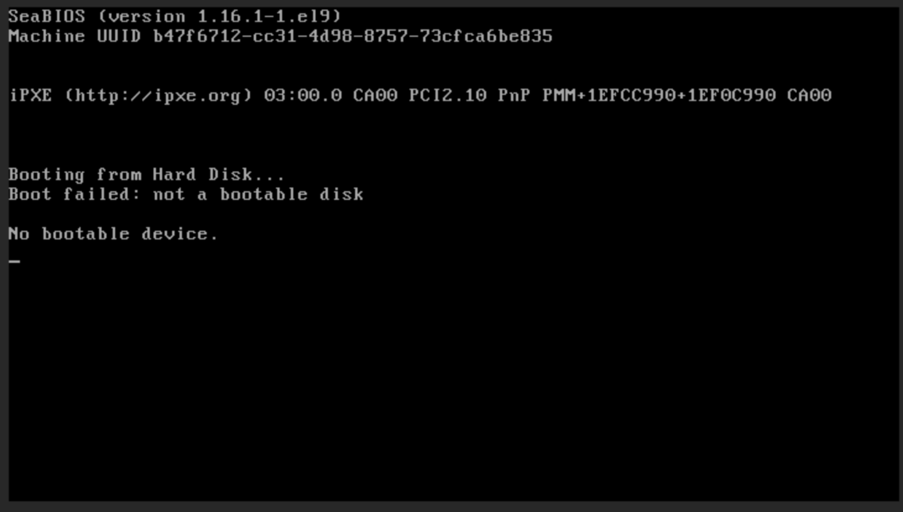

Guided solution (page 2)
Connect to the workstation VM’s console to access the instance’s console
Refer to the Access instance’s console instructions under Additional information section of Break-fix Activity page.
-
From GUI console of workstation, connect to director VM and get the instance’s console URL
[student@workstation ~]$ oc exec -n openstack openstackclient -- openstack console url show scenario-bfx020-vm +----------+-----------------------------------------------------------------------------------------------------------------------------------------+ | Field | Value | +----------+-----------------------------------------------------------------------------------------------------------------------------------------+ | protocol | novnc | | url | https://nova-novncproxy-cell1-public-openstack.apps.ocp4.example.com/vnc_lite.html?path=%3Ftoken%3D2cf5e980-7d85-4a90-9884-d7c621c2a9dc | +----------+-----------------------------------------------------------------------------------------------------------------------------------------+
The preceding output can differ in your environment.
-
Click the link in the output of above command to access the instance’s console from workstation VM console web browser.
You might see the No bootable device boot failure message, indicates the VM did not boot successfully.
-
Use the openstack server show command to verify the details of the instance, particularly the image being utilized.
[student@workstation ~]$ oc exec -n openstack openstackclient -- openstack server show scenario-bfx020-vm +-------------------------------------+---------------------------------------------------------------+ | Field | Value | +-------------------------------------+---------------------------------------------------------------+ ...output omitted... | image | scenario-bfx020-image (aef5b943-d9e1-4d6a-8ef5-df3e5721b2de) | ...output omitted...
-
Inspect the image using openstack image show command.
[student@workstation ~]$ oc exec -n openstack openstackclient -- openstack image show scenario-bfx020-image +-------------------------------------+-----------------------------------------+ | Field | Value | +-------------------------------------+-----------------------------------------+ ...output omitted... | size | 196608 | ...output omitted...
Note that the image size is pretty small, it is likely a root cause of the boot failure.
-
To resolve this issue, begin by deleting the problematic server.
[student@workstation ~]$ oc exec -n openstack openstackclient -- openstack server delete scenario-bfx020-vm
-
Recreate the instance, this time using the cirros image, which is a lightweight and commonly used image for testing purposes.
[student@workstation ~]$ oc exec -n openstack openstackclient -- openstack server create --image cirros-0.5.2-x86_64 --flavor m1.small --key-name scenario-bfx020-key --nic net-id=scenario-bfx020-network --security-group scenario-bfx020-sg scenario-bfx020-vm
-
Get the floating IP for the newly created instance, enabling external access and communication.
[student@workstation ~]$ oc exec -n openstack openstackclient -- openstack floating ip list +--------------------------------------+---------------------+------------------+------+--------------------------------------+----------------------------------+ | ID | Floating IP Address | Fixed IP Address | Port | Floating Network | Project | +--------------------------------------+---------------------+------------------+------+--------------------------------------+----------------------------------+ | 11290596-ad3e-4688-a791-5d12fa85c67b | 192.168.51.181 | None | None | b2f70670-883c-44ed-9cd3-9be361430dc7 | 0192bf49efca46bf932847c75117578e | +--------------------------------------+---------------------+------------------+------+--------------------------------------+----------------------------------+
Floating IP in preceding output can differ in your environment.
-
Attach a floating IP to the newly created instance.
[student@workstation ~]$ oc exec -n openstack openstackclient -- openstack port list --server scenario-bfx020-vm +--------------------------------------+------+-------------------+--------------------------------------------------------------------------------+--------+ | ID | Name | MAC Address | Fixed IP Addresses | Status | +--------------------------------------+------+-------------------+--------------------------------------------------------------------------------+--------+ | a9b701ad-2aae-4893-aa99-683ece2b3fda | | fa:16:3e:40:9d:96 | ip_address='192.168.120.156', subnet_id='1eeeac8a-8f1f-40ec-b03d-b88999d94fc3' | ACTIVE | +--------------------------------------+------+-------------------+--------------------------------------------------------------------------------+--------+ [student@workstation ~]$ oc exec -n openstack openstackclient -- openstack floating ip set --port a9b701ad-2aae-4893-aa99-683ece2b3fda 192.168.51.181
The preceding output can differ in your environment.
-
Test the connectivity by attempting ICMP ping and SSH access to the instance.
[student@workstation ~]$ ping 192.168.51.181 -c 1 PING 192.168.51.181 (192.168.51.181) 56(84) bytes of data. 64 bytes from 192.168.51.181: icmp_seq=1 ttl=63 time=4.77 ms --- 192.168.51.181 ping statistics --- 1 packets transmitted, 1 received, 0% packet loss, time 0ms rtt min/avg/max/mdev = 4.770/4.770/4.770/0.000 ms [student@workstation ~]$ ssh -i /home/student/osp_training/.scenariobfx020/scenario-bfx020-key.pem cirros@192.168.51.181 Warning: Permanently added '192.168.51.181' (ECDSA) to the list of known hosts. sign_and_send_pubkey: no mutual signature supported cirros@192.168.51.181's password: $ cat /etc/cirros/version 0.5.2 $ exit Connection to 192.168.51.181 closed.
Verify that these actions are successful, indicating that the instance created using the new image is now accessible.